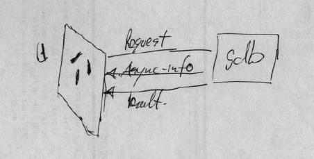

streamGDB Architecture
Stan Shebs argues that, overall, the existing text based command line
interface to GDB has served its clients well (xgdb, xxgdb, mxgdb, DDD,
CrossWind). Stan does, however, identify a number of limitations
with the existing text based mechanism:
-
The output format of the GDB commands are not precisely defined. GDB's
human readable output can (and often does) change in response to user feedback.
-
There is very little control over the volume of output, which means that
a GUI will need to spend time sifting through a large volume of data to
find just the values it requires.
-
GDB may mix output from several sources, such as when "display" commands
are used and when a program issues output through GDB.
To address these issues, Stan proposed:
[...] an alternate form of the CLI that is regularized for
the benefit of programmatic instead of human users. This interface
will still be textual, but the commands will be shorter and have only a
single fixed form, and the output will appear as structured data, also
in fixed forms and identified by type
Any code rendering data (such as breakpoint information or target variables)
would need to be modified so that the the information could be displayed
in both programmatic and more natural human readable forms. For instance,
the function mips-tdep.c:mips_do_register_info() contains code
to render the MIPS register set in a form palatable to humans. In
the programmatic version of GDB, this code would be modified (duplicated?)
so that the data was rendered in a more programmatic form.

A GUI debugger would then implement an adapter that matched their requirements
with that of the programmatic GDB interface.
Problems and limitations
Jim Blandy raises a number of concerns about this approach. In
particular, Jim identifies the issues:
-
Amending GDB to produce two kinds of output increases both the complexity
of the code and the maintenance overhead.
-
The current GDB allows the interspersion of data with error and warning
messages and target console messages on the output stream. The proposal
does not provide a formal (machine checkable) mechanism to ensures that
non data output gets correctly directed away from the data output stream.
Such a mechanism should ensure that both the existing occurrences of this
problem were fixed and that future updates were not able to re-introduce
this problem.
-
[the proposal does not] force programmers to be explicit about how the
interface changes, make an opportunity to consider carefully how the interface
should change, and provide a convenient focus for the person responsible
for keeping that interface clean.
The clear resolution of these and other issues is part of the Headless
GDB project.
{kind=link}